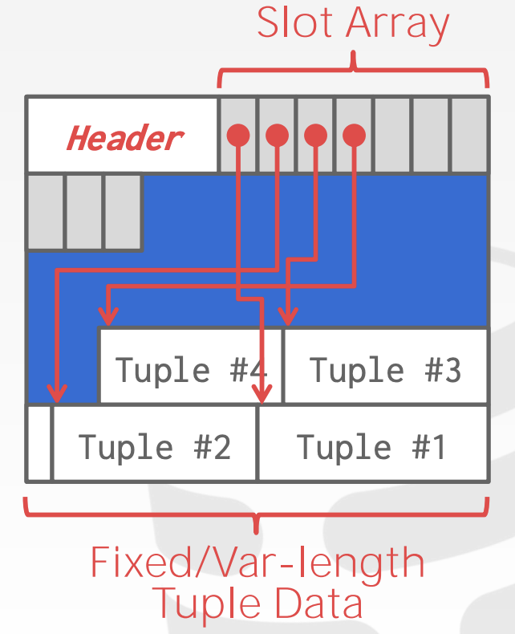

CMU Databases Systems: 03 Database Storage(pt.1)
Course Outline
The main purpose of this course is How to build a software of database management system.
Storage
- Volatile Devices: it needs power to keep its data persistent.
- Non-Volatile Devices: does not need continous power for device to retain its data.
Non-Volatile Memory: a storage device that is almost as fast as DRAM but with the persistence of a disk.
Disk-Oriented DBMS
The data in the database files is organized into pages, and the first page is the directory page.
Execution Engine: execute queries
|
| ask for specific page(block)
|
Buffer Pool: The buffer pool manager will ensure that the page is there while the
execution engine is operating on that memory.
|
| manages the movement back and forth between disk and memory
|
Disk: save database files
Why not use the OS?
The operating system doesn't know about what data the user wants to query, and how to operates the data in efficiency.
This high-level design goal is like virtual memory, where there is a large address space and a place for the OS to bring in pages from disk.
Never use mmap in your DBMS if you need to write.
Having the DBMS implement these procedures itself gives it better control and performance
File Storage
DBMS stores a database as files on disk.
The OS does not know anything about the contents of these files. Only the DBMS knows how to decipher their contents, since it is encoded in a way specific to the DBMS.
The DBMS’s storage manageris responsible for managing a database’s files
Database Pages
The DBMS organizes the database across one or more files in fixed-size blocks of data called pages.
- Pages contain different type of data
- Most DBMS don't mix up types in one page
- Some DBMS require self-contained pages, which means all the information needed to read the page is in the page itself
- Most DBMS use fixed-size pages to avoid the engineering overhead
Three Important concept in pages:
- Hardware page (usually 4 KB).
- OS page (4 KB).
- Database page (1-16 KB).
The storage device guarantees an atomic write of the size of the hardware page(failsafe write). If the hardware page is
4 KB, then when the system tries to write 4 KB to the disk, either all 4 KB will be written, or none of it will.
This means that if our database page is larger than our hardware page, the DBMS will have to take extra
measures to ensure that the data gets written out safely since the program can get partway through writing a
database page to disk when the system crashes.
There are trade-offs between the size of the Hardware page and the Database page.
Database Heap
A heap file organization is one of the ways to find the location of the page. A heap file is an unordered collection of pages where tuples are stored in random order.
The DBMS can locate a page by using Linked List or Page Directory:
Linked List: Header page holds pointers to to a list of free pages and a list of data pages. However, if the DBMS is looking for a specific page, it has to do a sequential scan on the data page list until it finds the page it is looking for.Page Directory: DBMS maintains special pages that track locations of data pages along with the amount of free space on each page.
Page Layout
Every page includes a header that records meta-data about the page’s contents:
- Page size
- Checksum
- DBMS version
- Transaction visibility
- Some systems require pages to be self-contained (e.g oracle)
A strawman approach appends a new tuple to the end. However, problems arise when it
deletes a tuple or when the tuples have variable-length attributes.
There are two main approaches to laying out data in pages:
Slotted Pages: Page maps slots to offsets.
- Most common approach used in DBMSs today
- Header keeps track of the number of used slots and the offset of the starting location of last used slot and a slot array, which keeps track of the location of the start of each tuple.
- To add a tuple, the slot array will grow from the beginning to the end, and the data of the tuples will grow from end to the beginning. The page is considered full when the slot array and the tuple data meet.
 Original Slides
Log-Structured: Instead of storing tuples, the DBMS only stores log records
- Stores records to file of how the database was modified (insert, update, deletes)
- To read a record, the DBMS scans the log file backwards and “recreates” the tuple
- Fast writes, potentially slow reads
- Works well on append-only storage because the DBMS cannot go back and update the data
Tuple Layout
A tuple is a sequence of bytes. It is DBMS’s job to interpret those bytes into attribute types and values.
Tuple Header: Contains meta-data about the tuple
- Visibility information for the DBMS’s concurrency control protocol
- Bit Map for NULL values
- Note that the DBMS does not need to store meta-data about the schema of the database here
Tuple Data: Actual data for attributes
- Attributes are typically stored in the order that you specify them when you create the table
- Most DBMSs do not allow a tuple to exceed the size of a page
Unique Identifier(Record ID)
- Each tuple in the database is assigned a unique identifier
- Most common: page id + (offset or slot)
Denormalized Tuple Data
If two tables are related, the DBMS can “pre-join” them, so the tables end up on the same page. This makes reads faster since the DBMS only has to load in one page rather than two separate pages, but it makes updates more expensive since the DBMS needs more space for each tuple.